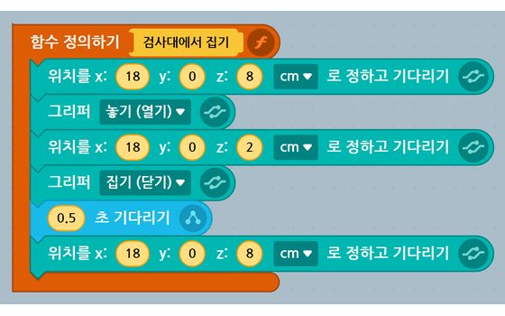
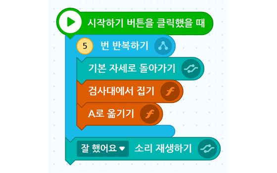
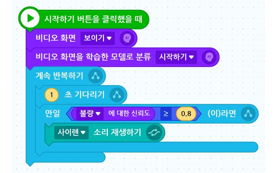
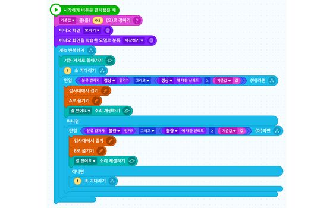

여는 법 · .ent 내려받기 → playentry.org/ws → 위쪽 파일 아이콘 ▾ → 오프라인 작품 불러오기
로봇 연결 · 연결 프로그램에서 「라쿤」 선택 · 「엔트리 서버 연결됨」 확인 · 동글 꽂고 로봇 전원 켜기
2교시 · 프로그램 연결과 기본 조작
3교시 · 로봇팔 제어 체험
4교시 · 제어 방식 비교 미션
5교시 · 연속동작 만들기

5교시 · 덱 84 · 부록 140–141장
함수 3개 · 집기 · A로 · B로
함수 [검사대에서 집기] [A로 옮기기] [B로 옮기기]. 좌표만 우리 팀 값으로 고칩니다

5교시 · 덱 85 · 부록 142장
반복 이송 · 5회
5번 반복 { 기본 자세 → 집기 → A로 } → 「잘 했어요」. 마지막에 불량 블록을 올려 봅니다
7교시 · 학습 결과 개선

7교시 · 덱 104 · 부록 159장
신뢰도 다이얼
불량 신뢰도 ≥ 기준값이면 사이렌. 기준값 0.5 · 0.8 · 0.95를 같은 블록 10개로 비교
8교시 · 학습 로봇 미션 및 나눔

8교시 · 덱 111 · 부록 170장
E1 AI 품질검사 (핵심)
끼울 곳 셋: 분류 시작 · 정상 조건 · 불량 조건. 스페이스 = 한 회 시작. 1회 성공하면 「팀명_08」로 저장